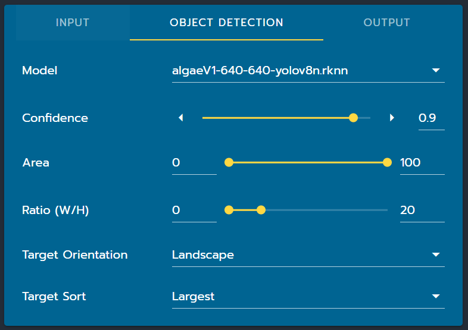
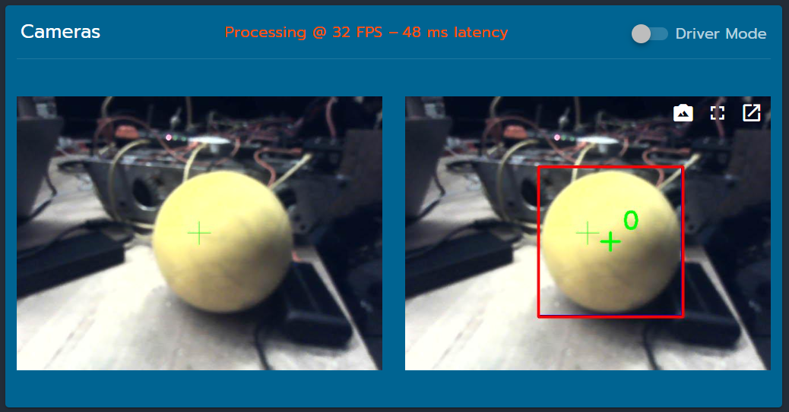

Object Detection Using Neural Networks
in progress
This is the more complicated of the two approaches, but is substantially more effective. A deeper understanding of neural networks (than what will be explained on this page) can be found here. If you're interested in learning more about neural nets in general, I'd start there.
Setup
Getting a neural network running on a coprocessor on an FRC robot involves two steps: training and exporting. Exporting varies depending on what device you're using, but training is the same no matter what.
Training
PhotonVision is built to accept a specific format of neural network called YOLO (which stands for You Only Look Once, more info here and here and here).
1. Getting Enough Data
You will need, for a good model, over 1000 images of the target object. Taking this many pictures by hand
2. Videos To Images
So neural networks require images to work, and what we have done is take a great deal of video. We need to turn the videos into images, which in theory can be done by just splitting the video into its frames. There's no need to use every single frame, a better idea would be to use every n frames, for example every 10 or every 5 frames.
There are a number of ways to split a video into frames but the one that I tend to use is done through VLC media player. This is nice because it works both on Windows and MacOS.
Exporting
Depending on what device you're using as your coprocessor, the ai model needs to be in a different file format. All of the file extensions here tend to be very niche (.onnx, .pt, .rknn, etc.).
I will explain here how to do things for both an OrangePi and a Rubik Pi 3, just know that while other devices are certainly possible we don't use them and so I can't offer a guide on how to set things up for them.
1. OrangePi
The OrangePi runs neural networks using the .rknn format. You first have to export the .pt file you got after training to a .onnx file, then you can export to .rknn.
Quick note: All of the information in this section was derived from a single guide, found here. This page pretty much says the same stuff, so I'm giving all credit to the author of that guide. The only reason I'm writing anything at all is so that this website can remain a one-stop-shop, and so that if the original blog ever goes down this can act as a backup.
1. Rubik Pi 3
Bringing The Model Into Photonvision
Adding an object detection model to PhotonVision is slightly different depending on what version of PhotonVision you're using. I'll cover the newer system (2025+ I think) here.
First, make sure that you have the Object Detection pipeline selected.
With the model uploaded, everything you need will be inside the Object Detection panel.
 The relevant parts of the PhotonVision dashboard.
The relevant parts of the PhotonVision dashboard.
Here is the full Object Detection panel:
 The Object Detection panel.
The options each do the following:
-
Modelis a drop-down, allowing you to select either the default model or one that you've uploaded. -
Confidenceis the range of confidence values that will be considered valid. -
Areais the range of percent area (of the whole image) values that will be considered valid. -
Ratio (W/H)is range of width-to-height ratios that will be considered valid. -
Target Orientationtells PhotonVision to look for either horizontal or verticl rectangles. -
Target Sorttells PhotonVision how to define object 0, object 1, and so on.Largestfor example just means the biggest object gets to be 0, the next-biggest 1, etc.
Once everything's been done properly, you should see something along these lines:
 The camera correctly identifies the ball.
Flaws
TLDR: the ai can mess up, good data takes work
It's still possible, especially if you don't have a lot of training data or if your training data is too self-similar, for parts of the image that aren't actually game pieces to be selected just because they have a similar color. Good models take a lot of data, and that can take a while.